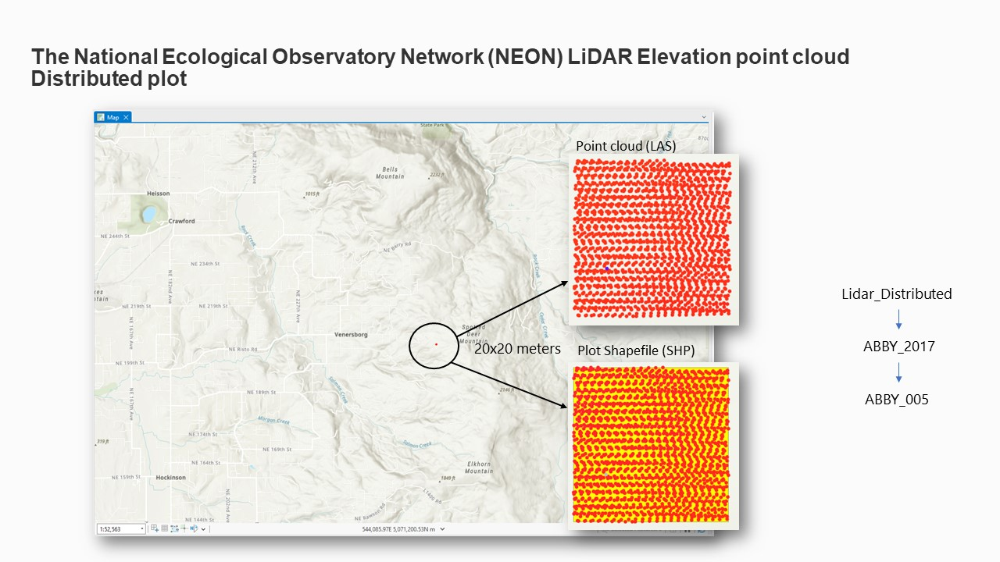
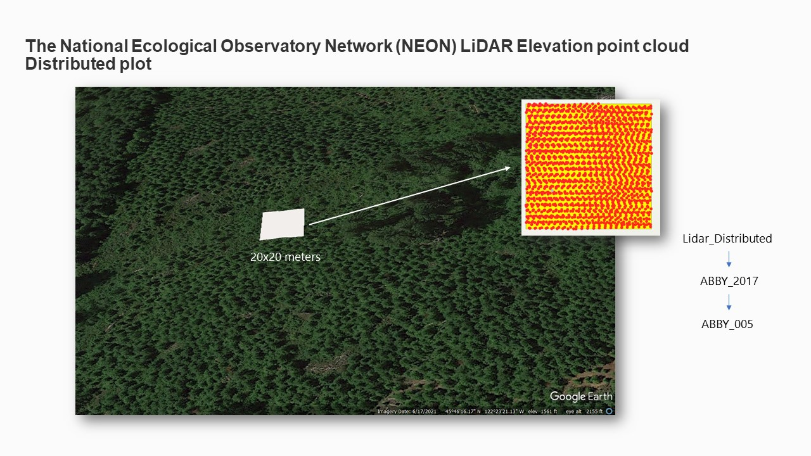
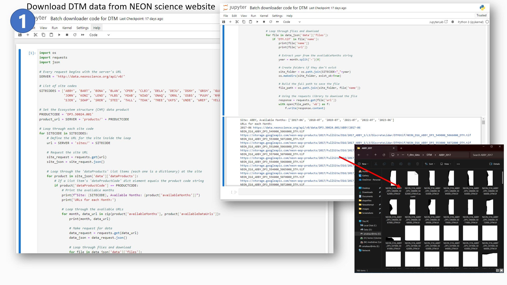
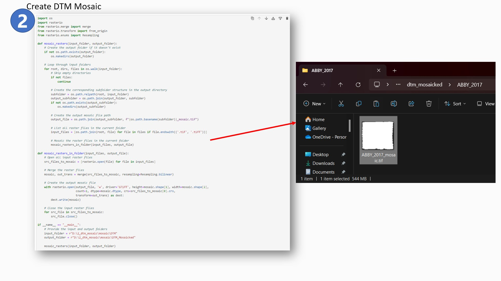
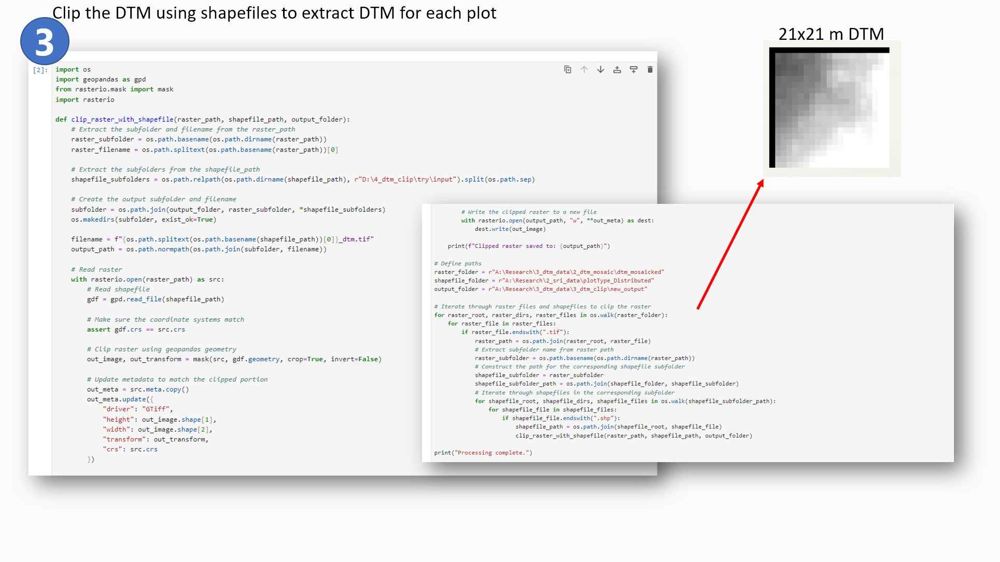
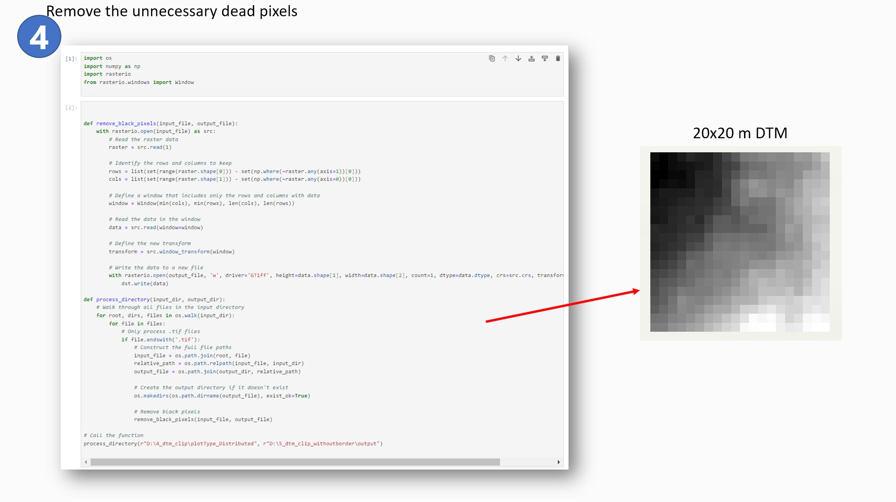
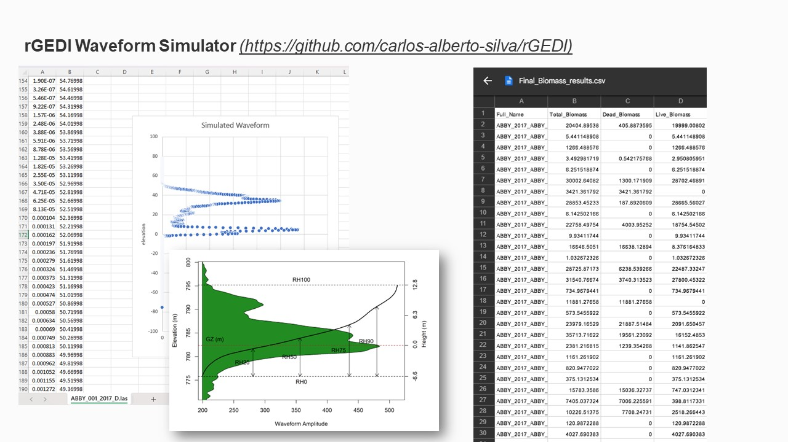

Back to Portfolios
Back to Portfolios
Deep Learning for NASA's GEDI Biomass
Purpose: Master's thesis research project Supervisor: Dr. Tao Liu Collaborators: Dr. Parth Bhatt, Sri Renganath Duration: September 2023 - April 2024 Skills: Machine Learning, Deep Learning, ArcGIS Pro, Python and R programming, Remote Sensing analysis, ResearchIntroduction
-
This research project is designed to evaluate the performance of widely used regression models
in calculating vegetation features, utilizing Relative Height (RH) and Vegetation Aggregate
Biomass as input predictor variables. The datasets used for model fitting are sourced from two
distinct projects: NASA's Global Ecosystem Dynamics Investigation (GEDI) and the NSF
National Ecological Observatory Network (NEON). These datasets consist of globally
distributed, spatially and temporally coincident satellite, and field-based airborne lidar data.
The primary focus of the study is to compare the relative height (RH) and ground biomass
matrices obtained from actual GEDI observations with ALS-derived simulated benchmarks
across the United States. The comparison will be facilitated through cross-evaluation and
assessment of mean error as a metric.
GEDI, a satellite-based full waveform lidar system, is dedicated to providing accurate estimates
of forest aboveground biomass density (AGBD). Meanwhile, the National Ecological
Observatory Network (NEON), operated by Battelle and funded by the National Science
Foundation, serves as a continental-scale observation facility. NEON's mission is to collect
long-term, open-access ecological data to enhance our understanding of how U.S. ecosystems
are evolving.
Data from both projects are openly accessible. For this project spatially and temporally
coincident Lidar point cloud data was collected. This project report intends to demonstrate the
use of the Python programming language for collection, processing, interpretation, and
visualization of the following data to achieve my research goals and objectives.
Methodology
-
The initial objective involved procuring Discrete Return LiDAR point clouds from the NEON
database, focusing on various sites across the United States, each denoted by a unique
four-letter sitename such as ABBY, TALL, YELL, etc. The data spans multiple years, ranging
from 2014 to 2022, and was collected for two distinct types of sample plots: Distributed and
Tower. The distributed plot consisted of a 20 x 20 meter cell whereas the tower plot had four
cells of 20 x 20 meter each forming a 40 x 40 meter cell. Two random cells were chosen for
each plot therefore giving two 20 x 20 meter cells. Each plot has a 3-digit identification number
such as 002, 065 etc.
To illustrate, a Distributed Plot may be named as follows: "Distributed Plot - ABBY_2017_005".
Subsequently, a shapefile (SHP) of the plot and its corresponding Point Cloud (LAS) file were
downloaded and organized in a systematic subfolder structure to facilitate subsequent analysis.


-
In order to utilize the absolute elevation data from the point cloud it was required to normalize it
in order to get elevation with respect to the ground. To do that, I downloaded Digital Terrain
Model (DTM) data for each plot from the NEON database. This data would then serve as a reference to get normalized point cloud data (Elevation values with respect to the ground). This
process required me to apply Python scripts in order to download, clip, and extract DTM (tiff)
corresponding to each plot of 20 x 20 meters.

-
I first downloaded the DTM data by using NEON API which requires inputs such as SITECODE
(four-letter word), Product code (DP3.30024.001 - Elevation LiDAR) and create a loop in such a
way that all site data are downloaded and sorted in the same subfolder structure as my LAS
files.
The DTM files were then combined to form a complete mosaic of the entire site using the
following code:

- I utilized the rasterio package to achieve this goal. The OS package was useful for naming the
downloaded files and assigning them in subfolders according to site and year.
The next step was to clip the DTM mosaic files using plot shapefiles and get 20 x 20 meters plot
size DTM files for each plot.

- I used a combination of rasterio and geopandas packages to achieve this objective. One unique
challenge during the clipping was that the DTM mosaics were associated with one unique
coordinate system whereas each plot shapefile had a different coordinate system. In order to
clip them with an accurate coordinate system, I added the following line of code:
assert gdf.crs == src.crs in order to make sure that coordinate systems are matched before the
clipping takes place.
During the clipping process, I encountered an issue for which I was unable to find the reason for
its occurrence. The clipped files were 21 x 21 meters with black null pixels on two borders of
each plot. The reason was unknown so I decided to use another line of code to remove the
extra black borders and convert it into 20 x 20 meter files.

-
Therefore the numpy package was a great tool to extract and remove the black pixels from the
plot.
The LiDAR point cloud (LAS) files for each plot were normalized using the corresponding DTM
(tiff) files. These new normalized LAS files were then processed into rGEDI waveform simulator.
This simulator was initially created for GEDI aa a waveform simulator for calibration of
algorithms and assessing mission accuracy. But now, virtual GEDI-like observations can be
derived from airborne laser scanning (ALS) data for given locations using the GEDI simulator.
The rGEDI simulator produced GEDI-like waveforms with Elevation and Wave amplitude using
the NEON LiDAR data for each plot. This waveform is necessary to extract Relative Height (RH
matrices) for further analysis.

- Total biomass for each plot was also calculated for each plot using the matrices (such as
species, tree diameter, etc) provided by the NEON database.
Result and Discussion
- The objective of this project was to collect RH matrices and Biomass for each plot using both
GEDI and NEON data. The data has been collected for the Neon sites and my next step is to do
the same for GEDI using Python programming. Once this data processing has been completed,
this data will serve as an input for regression analysis which includes the Ordinary Least Square
(OLS) regression model as well as the Random Forest (RF) regression model. The mean error
will be then cross-evaluated to test the performance of both the models.
References
- 1. Duncanson, L., Kellner, J. R., Armston, J., Dubayah, R., Minor, D. M., Hancock, S., Healey, S. P., Patterson, P. L., Saarela, S., Marselis, S., Silva, C. E., Bruening, J., Goetz, S. J., Tang, H., Hofton, M., Blair, B., Luthcke, S., Fatoyinbo, L., Abernethy, K., & Alonso, A. (2022). Aboveground biomass density models for NASA’s Global Ecosystem Dynamics Investigation (GEDI) lidar mission. Remote Sensing of Environment, 270, 112845. https://doi.org/10.1016/j.rse.2021.112845
- 2. NEON (National Ecological Observatory Network). Elevation - LiDAR (DP3.30024.001), RELEASE-2023. Dataset accessed from https://data.neonscience.org/data-products/DP3.30024.001/RELEASE-2023 on November 20, 2023.
- 3. NEON (National Ecological Observatory Network). Discrete return LiDAR point cloud (DP1.30003.001), provisional data. Dataset accessed from https://data.neonscience.org/data-products/DP1.30003.001 on November 20, 2023.
- 4. NEON Data API Docs. (2023, November 28). GitHub. https://github.com/NEONScience/neon-data-api
- 5. Dubayah, R., Luthcke, S., Blair, J., Hofton, M., Armston, J., Tang, H. (2020). GEDI L1B Geolocated Waveform Data Global Footprint Level V001 [Data set]. NASA EOSDIS Land Processes Distributed Active Archive Center. Accessed 2023-12-02 from https://doi.org/10.5067/GEDI/GEDI01_B.001
- 6. Silva,C.A; Hamamura,C.; Valbuena, R.; Hancock,S.; Cardil,A.; Broadbent, E. N.; Almeida,D.R.A.; Silva Junior, C.H.L; Klauberg, C. rGEDI: NASA's Global Ecosystem Dynamics Investigation (GEDI) Data Visualization and Processing. version 0.1.9, accessed on October. 22 2020, available at: https://CRAN.R-project.org/package=rGEDI
- 7. Huettermann, S., Jones, S., Soto-Berelov, M., & Hislop, S. (2022). Intercomparison of Real and Simulated GEDI Observations across Sclerophyll Forests. Remote Sensing, 14(9), 2096. https://doi.org/10.3390/rs14092096
- 8. Hancock, S., Armston, J., Hofton, M., Sun, X., Tang, H., Duncanson, L. I., Kellner, J. R., & Dubayah, R. (2019). The GEDI simulator: A large‐footprint waveform lidar simulator for calibration and validation of spaceborne missions. Earth and Space Science. https://doi.org/10.1029/2018ea000506